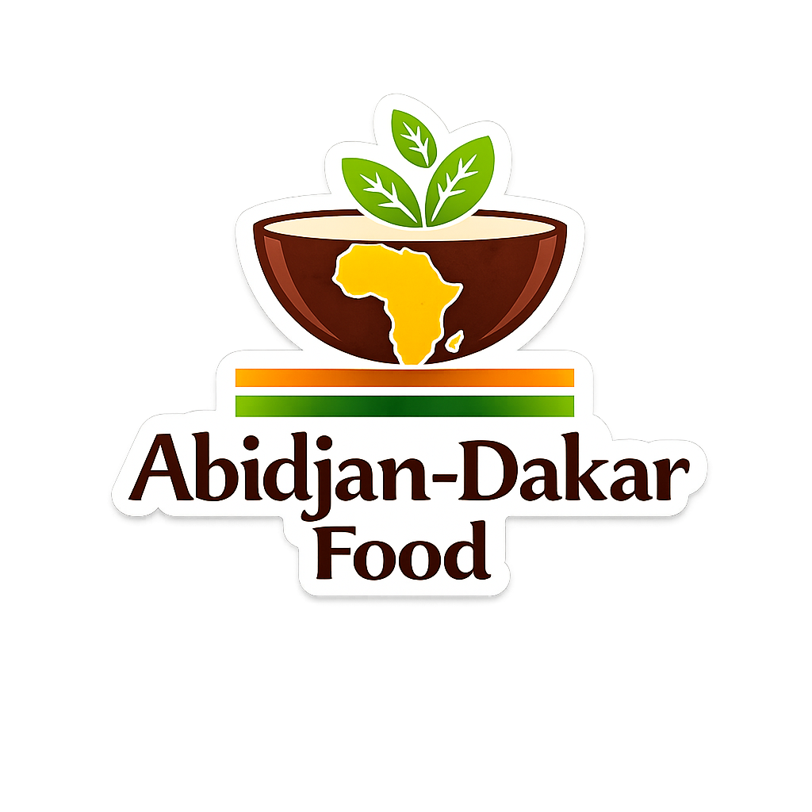

🎙 Observation vocale
Enregistre une note vocale après avoir autorisé le micro. Elle reste sur cet appareil. Le PDF indique qu’un audio existe ; le fichier sonore peut être partagé séparément.

Programme tiré du classeur cuisine. Dans Programmation, coche les jours, adapte les portions et ajoute des recettes.
Cocher chaque étape au moment où elle est réellement effectuée. Une tâche cochée enregistre sa date et son heure.
Enregistre une note vocale après avoir autorisé le micro. Elle reste sur cet appareil. Le PDF indique qu’un audio existe ; le fichier sonore peut être partagé séparément.
Sur Android, choisis Gmail dans le partage puis indique contact@adk-food.fr. Si le partage des fichiers n’est pas disponible, télécharge le PDF puis joins-le au mail.